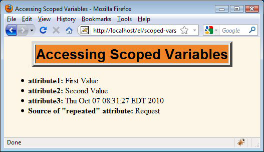
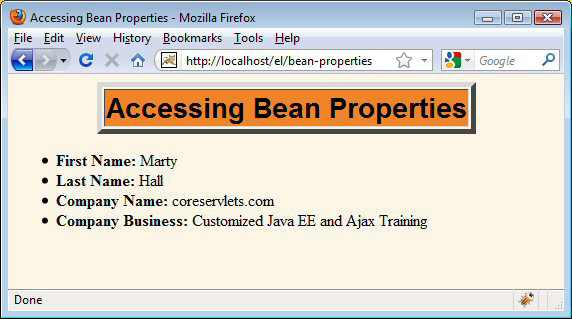
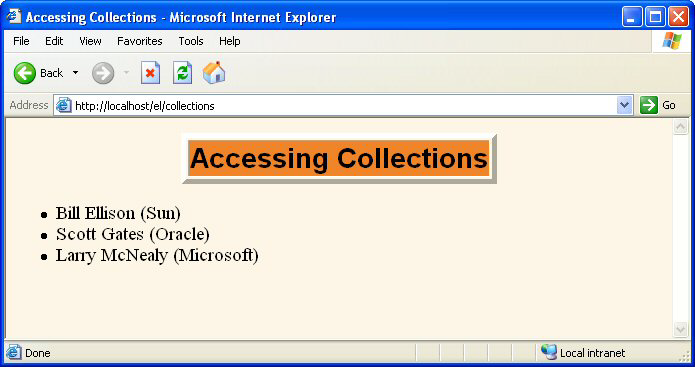
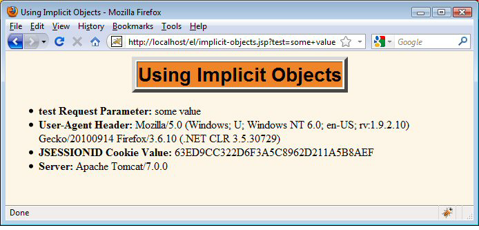
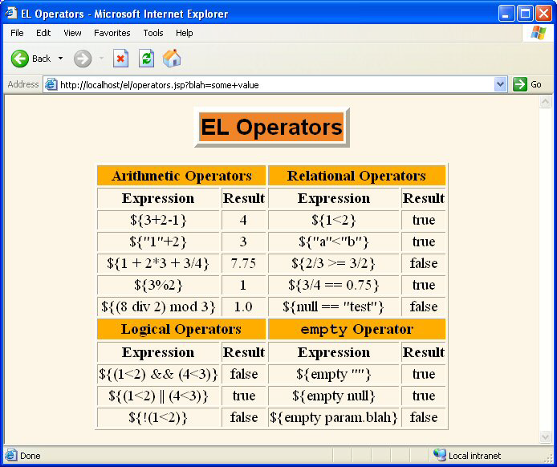
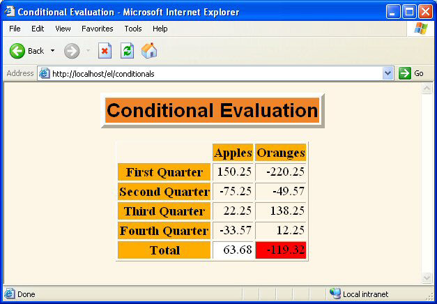

El Lenguaje de Expresión (EL)
La Lección
Agenda
- Motivating use of the expression language
- Understanding the basic syntax
- Understanding the relationship of the expression language to
the MVC architecture
- Referencing scoped variables
- Accessing bean properties, array elements, List elements, and
Map entries
- Using expression language operators
- Evaluating expressions conditionally
EL Motivation: Simplifying MVC Output Pages
Servlets and JSP: Possibilities for Handling a Single Request
- Servlet only. Works well when:
- Output is a binary type. E.g.: an image
- There is no output. E.g.: you are doing forwarding
or redirection as in Search Engine example.
- Format/layout of page is highly variable. E.g.:
portal.
- JSP only. Works well when:
- Output is mostly character data. E.g.: HTML
- Format/layout mostly fixed.
- Combination (MVC architecture). Needed when:
- A single request will result in multiple
substantially different looking results.
- You have a large development team with different
team members doing the Web development and the business logic.
- You perform complicated data processing, but have
a relatively fixed layout.
Implementing MVC withRequestDispatcher
- 1. Define beans to represent result data
- Ordinary Java classes with at least one getBlah
method
- 2. Use a servlet to handle requests
- Servlet reads request parameters, checks for
missing and malformed data, calls business logic, etc.
- 3. Obtain bean instances
- The servlet invokes business logic
(application-specific code) or data-access code to obtain the
results.
- 4. Store the bean in the request, session,
orservlet context
- The servlet calls setAttribute on the request,
session, or servlet context objects to store a reference to the beans
that represent the results of the request.
- 5. Forward the request to a JSP page.
- The servlet determines which JSP page is
appropriate to the situation and uses the forward method of
RequestDispatcher to transfer control to that page.
- 6. Extract the data from the beans.
- The JSP page accesses beans with jsp:useBean and a
scope matching the location of step 4. The page then uses
jsp:getProperty to output the bean properties.
- The JSP page does not create or modify the bean;
it merely extracts and displays data that the servlet created.
Drawback of MVC
- Main drawback is the final step: presentingthe
results in the JSP page.
- Jsp:useBean and jsp:getProperty
- Clumsy and verbose
- Cannot access bean subproperties
- JSP scripting elements
- Result in hard-to-maintain code
- Defeat the whole purpose behind MVC.
- Goal
- More concise, succinct, and readable syntax
- Accessible to Web developers
- Ability to access subproperties
- Ability to access collections
Main Point of EL for New MVC Apps
- Bean
- public String getFirstName(...)
{ ... }
- Servlet
- Customer someCust =
lookupService.findCustomer(...);
- request.setAttribute("customer", someCust);
- (Use RequestDispatcher.forward to go to JSP page)
- JSP
- <h1>First name is
${customer.firstName}</h1>
If this is all you
ever know about the Expression Language, you are
still in pretty good shape
Main Point of EL for MVC Apps thatare Upgrading from JSP 1.2
- When in JSP 2.x-compliant server with current
web.xml version, change:
<jsp:useBean id="someName"
type="somePackage.someClass"
scope="request, session, or application"/>
<jsp:getProperty name="someName"
property="someProperty"/>
${someName.someProperty}
- Bean, servlet, business logic
- Remain exactly the same as before
Advantages of the ExpressionLanguage
- Concise access to stored objects.
- To output a "scoped variable" (object stored with
setAttribute in the PageContext, HttpServletRequest, HttpSession, or
ServletContext) named saleItem, you use ${saleItem}.
- Shorthand notation for bean properties.
- To output the companyName property (i.e., result
of the getCompanyName method) of a scoped variable named company, you
use ${company.companyName}. To access the firstName property of the
president property of a scoped variable named company, you use
${company.president.firstName}.
- Simple access to collection elements.
- To access an element of an array, List, or Map,
you use ${variable[indexOrKey]}. Provided that the index or key is in
a form that is legal for Java variable names, the dot notation for
beans is interchangeable with the bracket notation for collections.
- Succinct access to request parameters, cookies,
and other request data.
- To access the standard types of request data, you
can use one of several predefined implicit objects.
- A small but useful set of simple operators.
- To manipulate objects within EL expressions, you
can use any of several arithmetic, relational, logical, or
empty-testing operators.
- Conditional output.
- To choose among output options, you do not have to
resort to Java scripting elements. Instead, you can use ${test ?
option1 : option2}.
- Automatic type conversion.
- The expression language removes the need for most
typecasts and for much of the code that parses strings as numbers.
- Empty values instead of error messages.
- In most cases, missing values or
NullPointerExceptions result in empty strings, not thrown exceptions.
Setup
Activating the Expression Language
- Available only in servers that support JSP 2.0 or
2.1 (servlets 2.4 or 2.5)
- E.g., Tomcat 5 or later, WebLogic 9 or later, WS
6+,
- Not Tomcat 4 or WebLogic 8 or WebSphere 5
- For a full list of compliant
servers, see http://theserverside.com/reviews/matrix.tss
- You must use the JSP 2.x web.xml file
- Download from coreservlets.com, use one from
Tomcat 5or 6, or Eclipse/MyEclipse will build one for you
<?xml version="1.0" encoding="ISO-8859-1"?>
<web-app xmlns="http://java.sun.com/xml/ns/j2ee"
xmlns:xsi="http://www.w3.org/2001/XMLSchema-instance"
xsi:schemaLocation=
"http://java.sun.com/xml/ns/j2ee web-app_2_4.xsd"
version="2.4">
...
</web-app>
Invoking the Expression Language
- Basic form: ${expression}
- These EL elements can appear in ordinary text or
in JSP tag attributes, provided that those attributes permit regular
JSP expressions. For example:
- <ul>
- <li>Name: ${expression1}</li>
- <li>Address: ${expression2}</li>
- </ul>
- <jsp:include page="${expression3}"/>
- * The EL in tag attributes
- * You can use multiple expressions (possibly
intermixed with static text) and the results are coerced to strings
and concatenated. For example:
- * <jsp:include page="${expr1}blah${expr2}"/>
Rare (but Confusing) EL Problem
- Scenario
- You use ${something} in a JSP page
- You literally get "${something}" in the output
- You realize you forgot to update an old web.xml
file to refer to servlets 2.4 (or 2.5), so you do so
- You redeploy your Web app and restart the server
- You still literally get "${something}" in the
output
- Why?
- The JSP page was already translated into a servlet
- A servlet that ignored the expression language
- Solution
- Resave the JSP page to update its modification
date
Preventing Expression Language Evaluation
- What if JSP page contains ${ ?
- Perhaps by accident, perhaps if you make a custom
tag library that also uses ${...} notation and evaluates it directly
(as with first release of JSTL).
- Deactivating the EL in an entire Web application.
- Use a web.xml file that refers to servlets 2.3
(JSP 1.2) or earlier.
- Deactivating the expression language in multiple
JSP pages.
- Use the jsp-property-group web.xml element
- Deactivating the expression language in individual
JSP pages.
- Use <%@ page isELIgnored="true" %>
- Deactivating individual EL statements.
- In JSP 1.2 pages that need to be ported unmodified
across multiple JSP versions (with no web.xml changes), you can
replace $ with $, the HTML character entity for $.
- In JSP 2.0 pages that contain both EL statements
and literal ${ strings, you can use \${ when you want ${ in the
output
Preventing Use of Standard Scripting Elements
- To enforce EL-only with no scripting, use
scripting-invalid in web.xml
<?xml version="1.0" encoding="ISO-8859-1"?>
<web-app xmlns="http://java.sun.com/xml/ns/j2ee"
xmlns:xsi=
"http://www.w3.org/2001/XMLSchema-instance"
xsi:schemaLocation=
"http://java.sun.com/xml/ns/j2ee web-app_2_4.xsd"
version="2.4">
<jsp-property-group>
<url-pattern>*.jsp</url-pattern>
<scripting-invalid>true</scripting-invalid>
</jsp-property-group>
</web-app>
Downsides to Preventing Use of Scripting Elements
EL Uses: Scoped vars, Bean properties, collections
Accessing Scoped Variables
- ${varName}
- Searches the PageContext, the HttpServletRequest,
the HttpSession, and the ServletContext, in that order, andoutput the
object with that attribute name. PageContext does not apply with MVC.
- Application: if you just have an error message,
you can store the String directly instead of putting it in a bean
andstoring the bean
- Equivalent forms
- ${name}
- <%= pageContext.findAttribute("name") %>
- <jsp:useBean id="name"
type="somePackage.SomeClass"
scope="...">
<%= name %>
Example: Accessing Scoped Variables
@WebServlet("/scoped-vars")
public class ScopedVars extends HttpServlet {
public void doGet(HttpServletRequest request,
HttpServletResponse response)
throws ServletException, IOException {
request.setAttribute("attribute1", "First Value");
HttpSession session = request.getSession();
session.setAttribute("attribute2", "Second Value");
ServletContext application = getServletContext();
application.setAttribute("attribute3",
new java.util.Date());
request.setAttribute("repeated", "Request");
session.setAttribute("repeated", "Session");
application.setAttribute("repeated", "ServletContext");
RequestDispatcher dispatcher =
request.getRequestDispatcher
("/WEB-INF/results/scoped-vars.jsp");
dispatcher.forward(request, response);
}
}
Example: Accessing ScopedVariables (Continued)
<!DOCTYPE ...;>
...
<TABLE BORDER=5 ALIGN="CENTER";>
<TR><TH CLASS="TITLE";>
Accessing Scoped Variables
</TABLE;>
<P;>
<UL;>
<LI><B>attribute1:<B;> ${attribute1}
<LI><B>attribute2:</B;> ${attribute2}
<LI><>>attribute3:</B> ${attribute3}
<LI><B>Source of "repeated" attribute:</B>
${repeated}
</UL>
</BODY></HTML>
Example: Accessing ScopedVariables (Result)

Accessing Bean Properties
- ${varName.propertyName}
- Means to find scoped variable of given name and
output the specified bean property
- Remember from MVC lecture that bean property
corresponds to getter method name, not instance var.
- Equivalent forms
- ${customer.firstName}
- <%@ page import="coreservlets.NameBean" %>
<%
NameBean person =
(NameBean)pageContext.findAttribute("customer");
%>
<%=
person.getFirstName() %>
- Equivalent forms
- ${customer.firstName}
- <jsp:useBean id="customer"
type="coreservlets.NameBean"
scope="request, session, or
application" />
<jsp:getProperty name="customer"
property="firstName" />
- This is better than script on previous slide.
- But, requires you to know the scope
- And fails for subproperties.
- No non-Java equivalent to
${customer.address.zipCode}
Example: Accessing BeanProperties
@WebServlet("/bean-properties")
public class BeanProperties extends HttpServlet {
public void doGet(HttpServletRequest request,
HttpServletResponse response)
throws ServletException, IOException {
Name name = new Name("Marty", "Hall");
Company company =
new Company("coreservlets.com",
"Customized Java EE and Ajax Training");
Employee employee =
new Employee(name, company);
request.setAttribute("employee", employee);
RequestDispatcher dispatcher =
request.getRequestDispatcher
("/WEB-INF/results/bean-properties.jsp");
dispatcher.forward(request, response);
}
}
public class Employee {
private Name name;
private Company company;
public Employee(Name name, Company company) {
setName(name);
setCompany(company);
}
public Name getName() { return(name); }
public void setName(Name name) {
this.name = name;
}
public CompanyBean getCompany() { return(company); }
public void setCompany(Company company) {
this.company = company;
}
}
public class Name {
private String firstName;
private String lastName;
public Name(String firstName, String lastName) {
setFirstName(firstName);
setLastName(lastName);
}
public String getFirstName() {
return (firstName);
}
public void setFirstName(String firstName) {
this.firstName = firstName;
}
public String getLastName() {
return (lastName);
}
public void setLastName(String lastName) {
this.lastName = lastName;
}
}
public class Company {
private String companyName;
private String business;
public Company(String companyName, String business) {
setCompanyName(companyName);
setBusiness(business);
}
public String getCompanyName() { return(companyName); }
public void setCompanyName(String companyName) {
this.companyName = companyName;
}
public String getBusiness() { return(business); }
public void setBusiness(String business) {
this.business = business;
}
}
Example: Accessing BeanProperties (Continued)
<!DOCTYPE ...>
...
<UL>
<LI><B>First Name:</B>
${employee.name.firstName}
<LI><B>Last Name:</B>
${employee.name.lastName}
<LI><B>Company Name:</B>
${employee.company.companyName}
<LI><B>Company Business:</B>
${employee.company.business}
</UL>
</BODY></HTML>
Example: Accessing BeanProperties (Result)

Equivalence of Dot and ArrayNotations
- Equivalent forms
- ${name.property}
- ${name["property"]}
- Reasons for using array notation
- To access arrays, lists,
and other collections
- See upcoming slides
- To calculate the property name at request time.
- {name1[name2]} (no quotes around name2)
- To use names that are illegal as Java variable
names
- {foo["bar-baz"]}
- {foo["bar.baz"]}
Accessing Collections
- ${attributeName[entryName]}
- Works for
- Array. Equivalent to
- theArray[index]
- List. Equivalent to
- theList.get(index)
- Map. Equivalent to
- theMap.get(keyName)
- Equivalent forms (for HashMap)
- ${stateCapitals["maryland"]}
- ${stateCapitals.maryland}
- But the following is illegal since 2 is not a
legal var name
- ${listVar.2}
Example: Accessing Collections
public class Collections extends HttpServlet {
public void doGet(HttpServletRequest request,
HttpServletResponse response)
throws ServletException, IOException {
String[] firstNames = { "Bill", "Scott", "Larry" };
List<String> lastNames = new ArrayList<String>();
lastNames.add("Ellison");
lastNames.add("Gates");
lastNames.add("McNealy");
Map<String,String> companyNames =
new HashMap<String,String>();
companyNames.put("Ellison", "Sun");
companyNames.put("Gates", "Oracle");
companyNames.put("McNealy", "Microsoft");
request.setAttribute("first", firstNames);
request.setAttribute("last", lastNames);
request.setAttribute("company", companyNames);
RequestDispatcher dispatcher =
request.getRequestDispatcher
("/WEB-INF/results/collections.jsp");
dispatcher.forward(request, response);
}
}
Example: Accessing Collections(Continued)
<!DOCTYPE ...>
...
<BODY>
<TABLE BORDER=5 ALIGN="CENTER">
<TR><TH CLASS="TITLE">
Accessing Collections</TABLE>
<P>
<UL>
<LI>${first[0]} ${last[0]} (${company["Ellison"]})
<LI>${first[1]} ${last[1]} (${company["Gates"]})
<LI>${first[2]} ${last[2]} (${company["McNealy"]})
</UL>
</BODY></HTML>
Example: AccessingCollections (Result)

Implicit Objects and Operators
Referencing Implicit Objects(Predefined Variable Names)
- pageContext. The PageContext object.
- E.g. ${pageContext.session.id}
- param and paramValues. Request params.
- E.g. ${param.custID}
- header and headerValues. Request headers.
- E.g. ${header.Accept} or ${header["Accept"]}
- ${header["Accept-Encoding"]}
- cookie. Cookie object (not cookie value).
- E.g. ${cookie.userCookie.value} or
${cookie["userCookie"].value}
- initParam. Context initialization param.
- pageScope, requestScope, sessionScope,
applicationScope.
- Instead of searching scopes.
- Problem
- Using implicit objects usually works poorly with
MVC model
Example: Implicit Objects
<!DOCTYPE ...>
...
<P>
<UL>
<LI><B>test Request Parameter:</B>
${param.test}
<LI><B>User-Agent Header:</B>
${header["User-Agent"]}
<LI><B>JSESSIONID Cookie Value:</B>
${cookie.JSESSIONID.value}
<LI><B>Server:</B>
${pageContext.servletContext.serverInfo}
</UL>
</BODY></HTML>
Example: Implicit Objects(Result)

Expression Language Operators
- Arithmetic
- + -* / div % mod
- Relational
- == eq != ne < lt > gt <= le >= ge
- Logical
- && and || or ! Not
- Empty
- Empty
- True for null, empty string, empty array, empty
list, empty map. False otherwise.
- CAUTION
- Use extremely sparingly to preserve MVC model
Example: Operators
...
<TABLE BORDER=1 ALIGN="CENTER">
<TR><TH CLASS="COLORED" COLSPAN=2>Arithmetic Operators
<TH CLASS="COLORED" COLSPAN=2>Relational Operators
<TR><TH>Expression<TH>Result<TH>Expression<TH>Result
<TR ALIGN="CENTER">
<TD>\${3+2-1}<TD>${3+2-1}
<TD>\${1<2}<TD>${1<2}
<TR ALIGN="CENTER">
<TD>\${"1"+2}<TD>${"1"+2}
<TD>\${"a"<"b"}<TD>${"a"<"b"}
<TR ALIGN="CENTER">
<TD>\${1 + 2*3 + 3/4}<TD>${1 + 2*3 + 3/4}
<TD>\${2/3 >= 3/2}<TD>${2/3 >= 3/2}
<TR ALIGN="CENTER">
<TD>\${3%2}<TD>${3%2}
<TD>\${3/4 == 0.75}<TD>${3/4 == 0.75}
Example: Operators (Result)

Evaluating Expressions Conditionally
- ${ test ? expression1 : expression2 }
- Evaluates test and outputs either expression1 or
expression2
- Problems
- Relatively weak
- c:if and c:choose from JSTL are much better
- Tempts you to put business/processing logic in JSP
page.
- Should only be used for presentation logic.
- Even then, consider alternatives
Example: ConditionalExpressions
@WebServlet("/conditionals")
public class Conditionals extends HttpServlet {
public void doGet(HttpServletRequest request,
HttpServletResponse response)
throws ServletException, IOException {
SalesBean apples =
new SalesBean(150.25, -75.25, 22.25, -33.57);
SalesBean oranges =
new SalesBean(-220.25, -49.57, 138.25, 12.25);
request.setAttribute("apples", apples);
request.setAttribute("oranges", oranges);
RequestDispatcher dispatcher =
request.getRequestDispatcher
("/WEB-INF/results/conditionals.jsp");
dispatcher.forward(request, response);
}
}
public class SalesBean {
private double q1, q2, q3, q4;
public SalesBean(double q1Sales,
double q2Sales,
double q3Sales,
double q4Sales) {
q1 = q1Sales; q2 = q2Sales;
q3 = q3Sales; q4 = q4Sales;
}
public double getQ1() { return(q1); }
public double getQ2() { return(q2); }
public double getQ3() { return(q3); }
public double getQ4() { return(q4); }
public double getTotal() {
return(q1 + q2 + q3 + q4); }
}
Example: ConditionalExpressions (Continued)
...
<TABLE BORDER=1 ALIGN="CENTER">
<TR><TH>
<TH CLASS="COLORED">Apples
<TH CLASS="COLORED">Oranges
<TR><TH CLASS="COLORED">First Quarter
<TD ALIGN="RIGHT">${apples.q1}
<TD ALIGN="RIGHT">${oranges.q1}
<TR><TH CLASS="COLORED">Second Quarter
<TD ALIGN="RIGHT">${apples.q2}
<TD ALIGN="RIGHT">${oranges.q2}
...
<TR><TH CLASS="COLORED">Total
<TD ALIGN="RIGHT"
BGCOLOR="${(apples.total < 0) ? "RED" : "WHITE" }">
${apples.total}
<TD ALIGN="RIGHT"
BGCOLOR="${(oranges.total < 0) ? "RED" : "WHITE" }">
${oranges.total}
</TABLE>...
Example: ConditionalExpressions (Continued)

Redoing JSP 1.2 MVCExamples in JSP 2
Request-Based Sharing: JSP 1.2
...
<BODY>
<jsp:useBean id="randomNum"
type="coreservlets.NumberBean"
scope="request" />
<H2>Random Number:
<jsp:getProperty name="randomNum"
property="number" />
</H2>
</BODY></HTML>
Request-Based Sharing: JSP 2.x
...
<BODY>
<H2>Random Number:
${randomNum.number}
</H2>
</BODY></HTML>
Session-Based Sharing: JSP 1.2
...
<BODY>
<H1>Thanks for Registering</H1>
<jsp:useBean id="nameBean"
type="coreservlets.NameBean"
scope="session" />
<H2>First Name:
<jsp:getProperty name="nameBean"
property="firstName" /></H2>
<H2>Last Name:
<jsp:getProperty name="nameBean"
property="lastName" /></H2>
</BODY></HTML>
Session-Based Sharing: JSP 2.x
...
<BODY>
<H1>Thanks for Registering</H1>
<H2>First Name:
${nameBean.firstName}</H2>
<H2>Last Name:
${nameBean.lastName}</H2>
</BODY></HTML>
ServletContext-Based Sharing: JSP 1.2
...
<BODY>
<H1>A Prime Number</H1>
<jsp:useBean id="primeBean"
type="coreservlets.PrimeBean"
scope="application" />
<jsp:getProperty name="primeBean"
property="prime" />
</BODY></HTML>
ServletContext-Based Sharing: JSP 2.x
...
<BODY>
<H1>A Prime Number</H1>
${primeBean.prime}
</BODY></HTML>
Wrap-Up
Summary
- The JSP 2 EL provides concise, easy-to-read access
to
- Scoped variables
- Bean properties
- Collection elements
- Standard HTTP elements such as request
parameters,request headers, and cookies
- The JSP 2 EL works best with MVC
- Use only to output values created by separate Java
code
- Resist use of EL for business logic
- Use EL operators and conditionals sparingly, if at
all
Volver al Inicio de la Sección
Todo el código de los
tutoriales J2EE de coreservlets.com (servlets, JSP, Struts, JSF 1,
JSF 2, PrimeFaces, Ajax [con jQuery], GWT 2, Spring, Hibernate, JPA,
basado en SOAP y Servicios Web RESTful, Hadoop, & programación
Java 7) . Hay también cursos de formación con un instructor en vivo sobre los mismos tópicos
J2EE (servlets, JSP, Struts, JSF 1, JSF 2, PrimeFaces, Ajax [con
jQuery], GWT 0, Spring, Hibernate, JPA, basado en SOAP y Servicios
Web RESTful, Hadoop, & programación Java 7) .